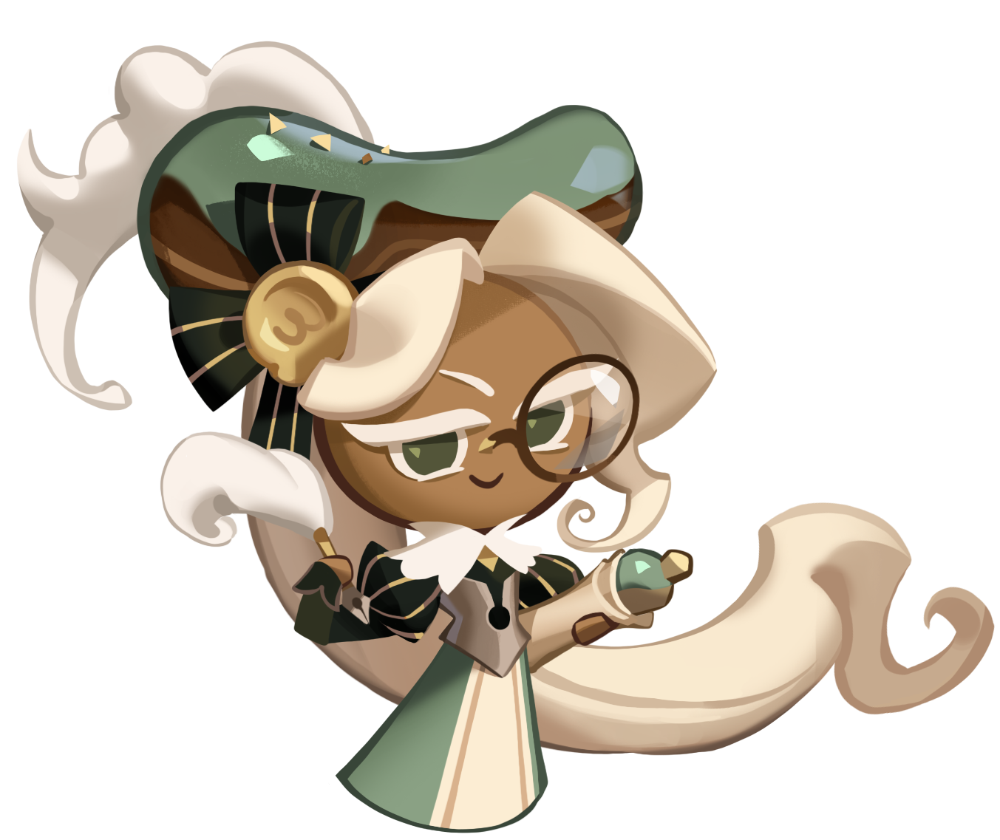

Mintchoco 5

Mintchoco es una de las galletas faboritas de la comunidad por su apariencia e historia con otros personajes sin embargo
el aporta una gran curacion de a golpe y aumenta bastante la velosidad de ataque del equipo.
Almond Cookie 4

Este es una galleta cuya forma de dar apollo es paralizar a los enemigos durante unos segundos a su vez que da una golpe
bastante considerable de daño.
Parfati 3

Parfati una galleta que es muy querida por su apariencia, estilo y por que es bastante sensilla de conseguir ya que si no te sale
en el gacha puedes obtenerla cabiando las monedas que te dan por tirada a cambio de sus repectivos cristales para obtenerla
pero lo que que importa es lo es es capaz de hacer que brinda curaccion y aumanta la defensa del equipo por un buen tiempo.
Eclair 2
Eclair es prácticamente la galleta más resiente de la actualización actual el cual no solo tenía una apariencia singular
sino que lo que más fue del agrado de la comunidad fue su utilidad dentro del PvP ya este se encarga de aplicar escudos a su vez
que reduse la defensa de los enemigos.
Cotton 1

Cotton es una de las galletas mas recientes dentro del juego esta fue bien recibida no solo por su apariencia estética
sino por todo lo que aporta dentro del equipo, ya que esta no solo da curación sino que también da un bufó de ataque a todos
sus miembros además de deja unas ovejas las cuales atacan a los enemigos durante unos segundos por lo cual viene
muy bien en varios equipos.